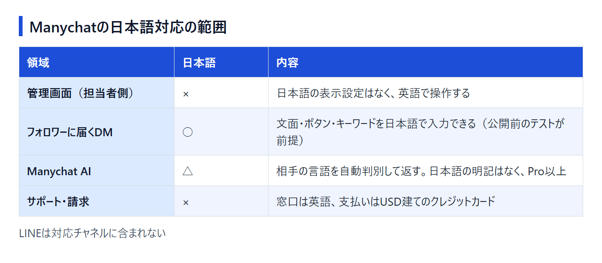
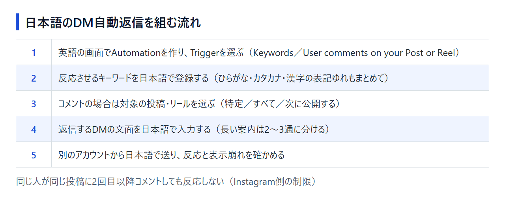

Manychatは日本語で使える？管理画面・メッセージ・AI・サポートの対応範囲
InstagramのDM自動返信を調べると、たいていManychat（メニーチャット）の名前が挙がります。ところが公式サイトは英語ばかりで、日本語で運用できるのか不安になった方も多いはずです。答えは「どこを日本語にしたいか」で変わります。管理画面、フォロワーに届くメッセージ、Manychat AI、サポートと請求では、日本語の扱いがそれぞれ違うからです。Manychatは契約していないため、公式サイトとヘルプセンターの情報をもとに整理しました。英語の画面のままManychatを使うか、国産ツールにするかを決める材料にしてください。
結論：管理画面は英語だが、読者に届くメッセージは日本語で作れる
Manychatの管理画面を日本語に切り替える設定は見当たりませんが、フォロワーに届くDMの文面やキーワードは自分で入力するため、日本語で作れます。日本語で問い合わせられるサポート窓口はありません。

日本語対応を4つの領域で確認する
領域ごとの状況は次のとおりです。
- 管理画面（担当者側）：日本語の表示設定は確認できず、英語で操作する
- フォロワーに届くメッセージ：文面・ボタン・キーワードは自分で日本語を入力する。日本語や絵文字の扱いを明記した公式ヘルプはないため、公開前のテストが前提
- Manychat AI：相手のメッセージの言語を自動で判別して返す。ただし日本語を名指しした記載はなく、使えるのはPro以上
- サポート・請求：窓口は英語で、支払いはUSD建てのクレジットカード
Manychatのままでよい人・国産ツールを選びたい人
分かれ目は、担当者が英語の設定画面を受け入れられるかどうかです。
- Manychatのままでよい人：英語の設定画面を翻訳などで読み進められる。そのうえで、有料プランを月$14（Essentialの年払い）から始めたい、InstagramのほかMessengerやWhatsAppも同じ画面で扱いたい、相手の言語に合わせて返すManychat AI（Pro以上）を使いたい
- 国産ツールを選びたい人：担当者全員が日本語の画面で操作したい、困ったときに日本語で問い合わせたい、円建てや銀行振込で払いたい
無料枠の数え方も違います。ManychatのFreeは「その月にやり取りした相手25人まで」、国産のエルグラムのフリープランは「月1,000通まで」です。1人に数通ずつ送る使い方なら、無料のまま届けられる相手はエルグラムのほうが多くなります。
Manychatの対応チャネルにLINEは含まれていません。LINEで配信したいなら、Manychatは選択肢から外れます。
Freeプランはカードを登録せずに始められます。日本語のメッセージが意図どおりに届くかを、契約前に自分のアカウントで確かめられます。
管理画面（運営者側）は日本語にできない
管理画面を日本語表示にする設定はなく、操作は英語の画面で行います。
表示言語の切り替えに日本語はない
公式サイトとヘルプセンターで選べる言語は、英語・スペイン語・ポルトガル語の3つで、公式の日本語サイトはありません。管理画面の言語設定に日本語を選べるという記載もありません。
ブラウザの翻訳は補助として使う
ブラウザの翻訳機能で管理画面を日本語表示にして読む方法もあります。ただ、訳されたメニュー名はヘルプの英語表記と一致しません。翻訳は意味を確かめる補助にとどめ、ヘルプと見比べるときは英語表記で項目を探すのが無難です。
覚えておきたい英語の設定語
公式ヘルプによく出てくる語と意味です。
- Automation：自動化の設定一式
- Trigger：自動化が動き出すきっかけ
- Keywords：メッセージ内の言葉に反応するきっかけ
- User comments on your Post or Reel：投稿・リールへのコメントに反応するきっかけ
- Any comment：すべてのコメントに反応させる設定
- Billing：請求・支払いの設定画面
日本語のDM自動返信を組む流れ（キーワードとコメント）
「DMのキーワードに反応して返信する」も「投稿・リールのコメントに自動でDMを送る」も、きっかけとキーワードを英語の画面で選び、返す文面を日本語で入力する流れです。どちらも公開前に自分のアカウントで動きを確かめます。

DMのキーワードに反応させる（Keywords Trigger）
Keywords Triggerは、相手のメッセージに指定したキーワードが含まれていると、返信の送信や自動化の開始といった動作を行うきっかけです。Instagramのほか、Messenger・WhatsApp・Telegram・SMSでも使えます。
気をつけたいのは日本語の表記ゆれです。英字の大文字・小文字は区別されませんが、「料金」「りょうきん」「リョウキン」のように、ひらがな・カタカナ・漢字の違いで反応が変わるかどうかは、公式ヘルプに記載がありません。想定される書き方は、まとめて登録しておきましょう。1つのルールに登録できるキーワードは10個まで、Freeプランで作れるカスタムキーワードは3つまでです。
投稿・リールのコメントに自動でDMを送る
User comments on your Post or Reelでは、反応させる対象を「特定の投稿・リール」「すべての投稿・リール」「次に公開する投稿・リール」から選びます。キーワードは、含める語と除外する語を指定するか、Any commentですべてのコメントに反応させるかを選べます。コメントへの公開返信とDMは同時に送れます。
見落としやすいのは、同じ人が同じ投稿・リールに2回目以降のコメントをしても反応しない点です。これはInstagram側の制限で、InstagramのAPIを使うほかのツールでも同じです。同じ投稿に何度もコメントを促すキャンペーンは、ツールを替えても組めません。
公開前に自分のアカウントで確かめる
設定が済んだら、別のアカウントから日本語でコメントやDMを送ります。キーワードの表記ゆれで反応するか、返信文の改行や絵文字が崩れずに表示されるかを見ておけば、フォロワーに届く前に問題を拾えます。コメントの表記ゆれを何通りも試すときは注意が必要です。同じアカウントから同じ投稿に続けてコメントしても2回目以降は反応しないため、投稿かテスト用のアカウントを替えながら試してください。
日本語メッセージの注意点とManychat AIの日本語応答
メッセージの長さには上限があり、日本語や絵文字の扱いを明記した公式ヘルプはありません。Manychat AIも日本語を名指しした説明がないため、本格的に使う前に日本語の応答を試しておくのが確実です。
メッセージの長さには上限がある
公式ヘルプに記載されている上限は次のとおりです。
- Instagramのボタン付きテキスト：640文字まで
- Meta側の上限：Instagramは1,000文字、Messengerは2,000文字まで
- クイックリプライのボタン文言：20文字まで
日本語1文字がどう数えられるかは公式に書かれていないため、長い案内は2〜3通に分けて送るほうが安全です。
Manychat AIは相手の言語を判別して返す
Manychat AIは、相手のメッセージの言語を自動で判別し、幅広い言語で応答できるとされています。ただし、短いメッセージや似た言語では判別を誤る場合があると公式に注記があります。対応言語の一覧はなく、日本語を名指しした記載もありません。
AI Stepでは、コンテキスト欄に応答の言語や口調を指定できます。「日本語で、です・ます調で答える」と書いておけば、判別の誤りに備えられます。Manychat AIを使えるのはProプラン以上です。
日本語の返答を試すときに見ておきたいこと
品質は公式情報だけでは測れないため、Proで試すときは次の点を見ておきます。
- 「はい」「料金」のような短い日本語に、英語で返してこないか
- AI Stepで日本語を指定したとき、敬語の調子が自社のアカウントに合うか
- 商品名などの固有名詞を崩さずに扱えるか
日本語サポート・日本からの支払い・請求書
日本語で問い合わせられる窓口はなく、サポートの手段はプランによって変わります。支払いはUSD建てのクレジットカードで、PayPalは使えません。インボイスは請求のたびにメールで届きます。
サポートは英語で、プランによって窓口が違う
- Free：ヘルプセンターを使ったセルフサポートのみ
- Essential・Pro：メールサポート
- Business・Advanced：優先サポート
どのプランでも、問い合わせは英語で送る前提です。
支払いはUSD建てのカード払い
有料プランはクレジットカードの登録が必須です。料金ページのFAQに載っているカードは Visa・Mastercard・American Express・Discover で、JCBの記載はありません。PayPalでの支払いはできないとヘルプに明記されています。
請求額は請求先の国によって決まり、最終的な金額は購入画面に表示されます。Manychat Walletの残高はメールやWhatsAppのテンプレート送信に使うもので、プランの月額には充てられません。
インボイスは請求のたびにメールで届く
インボイスは、請求のたびに請求先のメールアドレスへ自動で送られます。過去の分は Settings → Billing → View Billing History で見られ、PDFで残したいときはブラウザの印刷機能で保存します。Invoice Data欄には会社名や住所を追記できます。
日本の適格請求書発行事業者の登録番号が記載されるかは確認できませんでした。消費税の扱いは、経費処理の前に税理士に確認してください。
日本語で運用したいならチャネル別に国産ツールを選ぶ
Instagramのまま管理画面もサポートも日本語で使いたいならエルグラム、LINEで配信したいならLステップが候補です。同じ海外ツールのChatfuelに替えても、管理画面は英語のままです。
Instagramのまま日本語で運用するならエルグラム
エルグラム（L-gram）は、株式会社ミショナが運営する国産のInstagram自動化ツールです。投稿・リールへのコメントや届いたDMをきっかけにメッセージを自動で送れる点は、Manychatと同じです。
料金は円建てで、フリープランは月1,000通まで・チャット履歴は180日間です。有料はスタンダードプランの1本で、月額11,000円（税込）で配信数とチャット履歴の制限がなくなります。最低契約期間の縛りはありません。管理画面もマニュアルもチャットサポートも日本語で、支払いはクレジットカードか銀行振込を選べます。
- 向いている人：Instagramの自動返信を、担当者全員が日本語の画面で回したい。無料のまま月1,000通の範囲で運用したい
フリープランは初期費用も月額もかからないので、月1,000通の範囲でコメントからのDM送信を日本語の画面で試せます。
LINEで配信したいならLステップ
Lステップは、LINE公式アカウントの機能を広げる国産ツールです。InstagramやWhatsAppには対応していないので、「配信先をLINEに移す」ときの選択肢になります。
フリープランは月200通までで、有料はスタートプランの税込月額5,000円からです。これとは別に、LINE公式アカウント自体の利用料がかかります。有料プランには3か月の最低利用期間があり、申込みには日本の電話番号での認証が必要です。サポートは日本語のチャットと電話で、どちらも平日に受け付けています。
- 向いている人：顧客とのやり取りをLINEに集め、日本語の電話サポートも頼りたい
有料プランは新規登録なら初月無料で、最低利用期間に入る前に配信の流れを確かめられます。ただし、一度つないだLINE公式アカウントは解約後につなぎ直せません。本番のアカウントをつなぐかどうかは、試す前に決めておきます。
Chatfuelも管理画面は英語
Chatfuelは、WhatsAppの一斉配信やCRM連携を前面に出した海外のチャット自動化ツールです。公式サイトは英語・スペイン語・ポルトガル語で日本語はなく、英語の画面を避けたい人の乗り換え先にはなりません。料金の仕組みも違います。ずっと無料で使えるプランはありません。料金はUSD建ての定額で、Manychatのようにやり取りした相手の人数に応じて上がることはありません。コンタクト数とメッセージ数は無制限ですが、AIの処理には上限があり、超えるとAIの返信が止まります。
- 向いている人：英語の画面は苦にならず、コンタクト数が増えても月額を一定にしたい（AIの返信を多用するなら上限に注意）
Manychatの料金と、日本語で試す始め方
ManychatにはカードなしのFreeプランがあり、日本語のメッセージやキーワードへの反応はまずFreeで確かめられます。Manychat AIはPro以上の機能で、Proには14日間の無料トライアルがあります。
Freeプランで確かめられること
Freeプランは$0で、カードの登録はいりません。その月にやり取りしたアクティブコンタクトは25人まで、使えるチャネルは2つまで、稼働中の自動化は4つまでです。
コメントからのDM送信とキーワード反応の自動化を1つずつ作って試すなら、この枠で足ります。
Manychat AIを使うならPro（14日間の無料トライアルあり）
有料プランの月額は次のとおりです（2026年3月2日以降に作成したアカウントの料金。いずれもUSDの税抜価格）。
- Essential：年払いで月$14、月払いで月$17
- Pro：年払いで月$29、月払いで月$39（Manychat AI・APIが使える）
- Business：年払いで月$69、月払いで月$99（すべてのチャネルに対応）
- Advanced：年払いで月$139、月払いで月$199
Proの年払い$29は、1ドル=157円換算（執筆時点の目安。為替で変動）で約4,550円です。トライアルのあと月払いで続けるなら、Proは月$39になります。
料金は、その月にやり取りした相手（アクティブコンタクト）の人数で決まります。込みの人数はEssentialが250人、Proが2,500人で、超えた分は1人ごとに追加料金がかかります。なお、2026年3月2日より前に作成したアカウントには旧料金が適用されています。
EssentialとProには14日間の無料トライアルがあります。Freeと違い、有料プランはクレジットカードの登録が必須です。トライアル中にManychat AIまで使えるかは公式に明記がないため、申し込んだらまずAI Stepを追加できるかを確かめてください。
解約はWebの設定画面から
解約は、Webの Settings → Billing → Cancel Subscription から自分で手続きします。モバイルアプリからはできません。次の請求日にインボイスが発行済みだとその月の分は請求されるので、続けないと決めたら請求日より前に手続きします。解約後も請求期間の終わりまでは有料機能を使えます。購入から30日以内なら、フォームから返金を申請できます。
まずFreeで日本語の自動返信を1つ組み、AIの日本語応答が必要になったらProのトライアルに進む順番がおすすめです。
まとめ：英語の管理画面を受け入れられるかで決める
フォロワーとのやり取りを日本語にしたいだけならManychatで対応でき、担当者の画面やサポートまで日本語が必要ならエルグラム、LINEで配信したいならLステップを選ぶのが確実です。
迷ったら、次の3点で判断してください。
- 英語の設定画面を、翻訳などを使いながら読み進められる
- 日本語のサポートや、円建て・銀行振込での支払いがなくても困らない
- Instagram以外のチャネルやManychat AIも使いたい、または有料プランを月$14から始めたい
3つとも当てはまるならManychatが向いています。最初の2つのどちらかで引っかかるなら、Instagramのまま日本語で運用できるエルグラムを比べてみてください。
登録はFreeプランから始められます。Instagramアカウントをつないで、コメントへの自動DMを日本語で1つ作ってみてください。